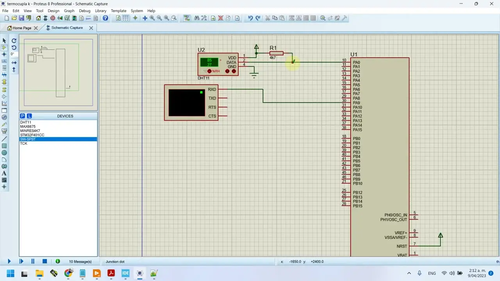
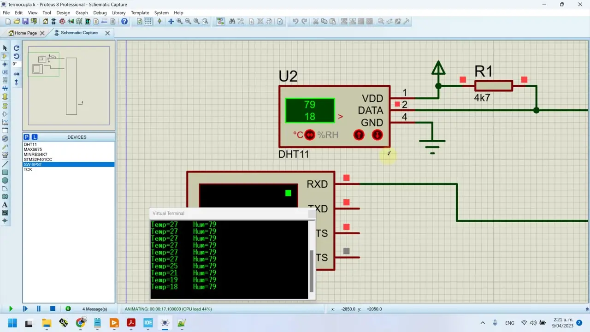
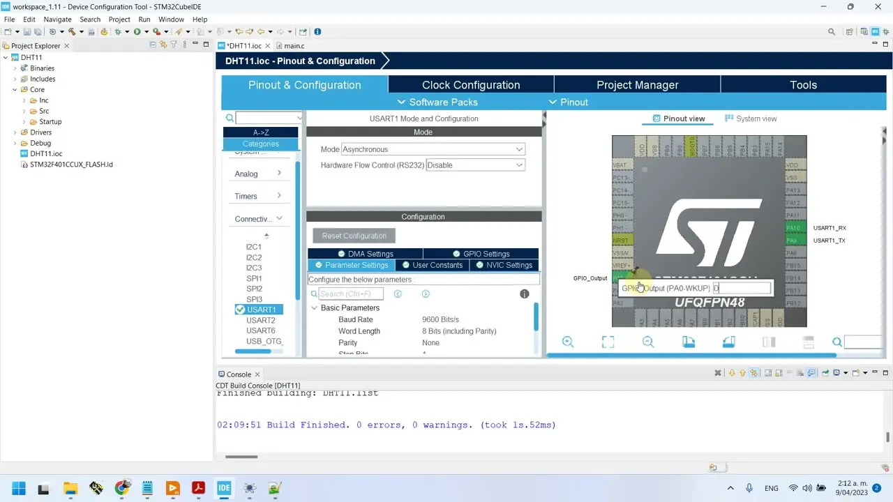
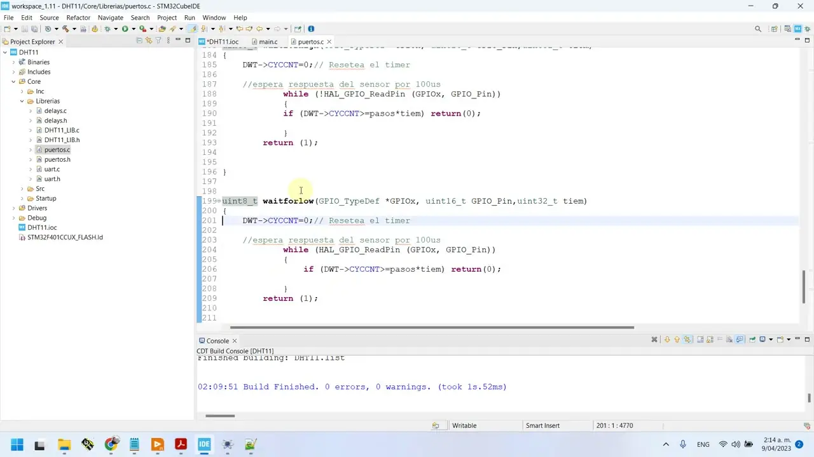
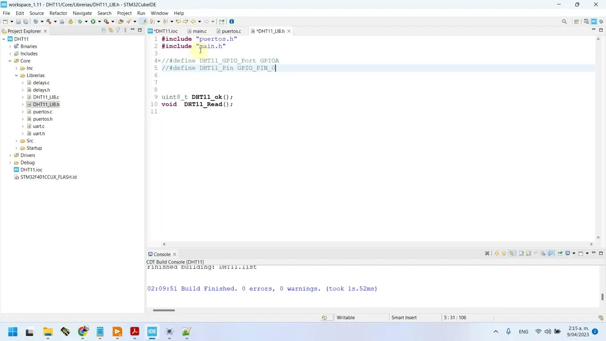
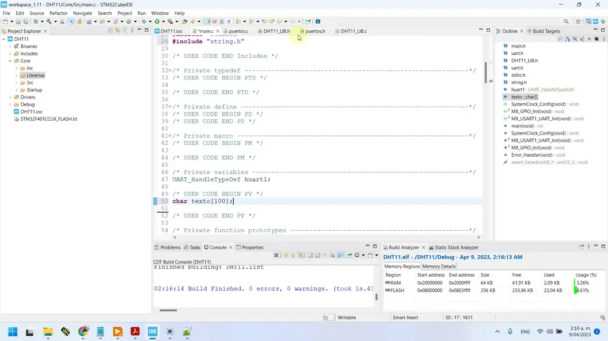
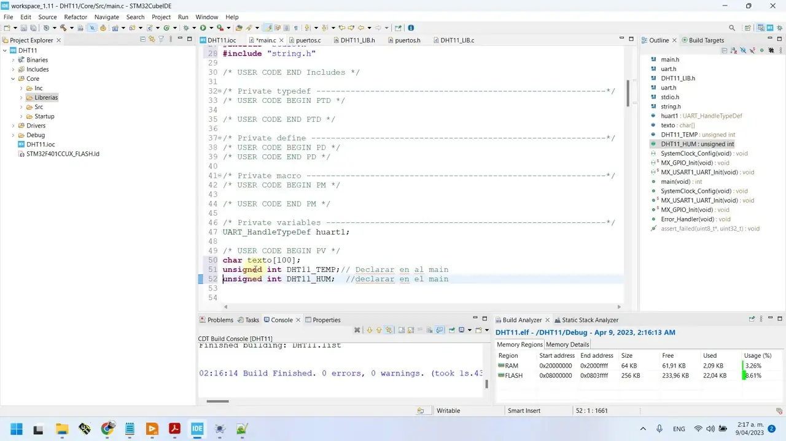
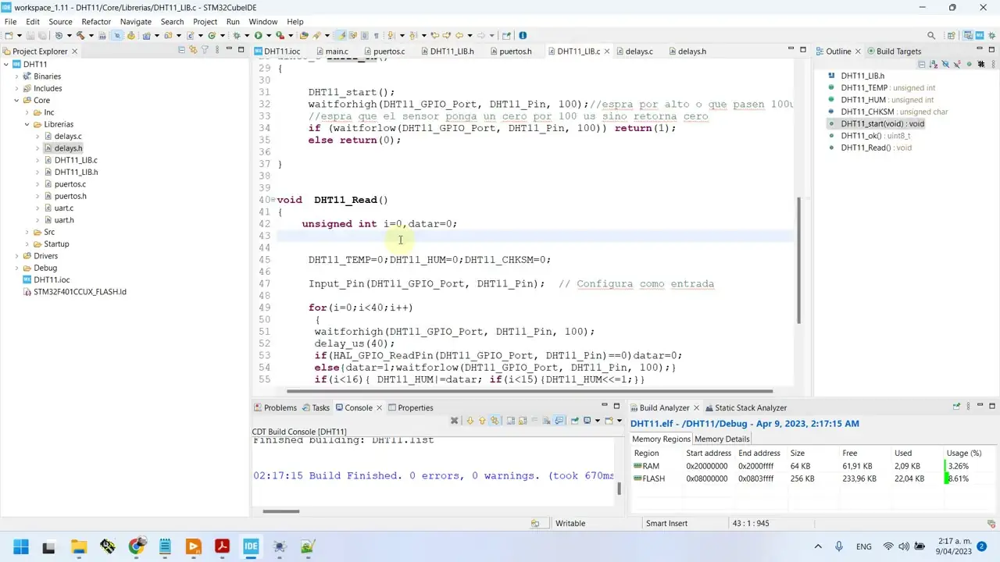
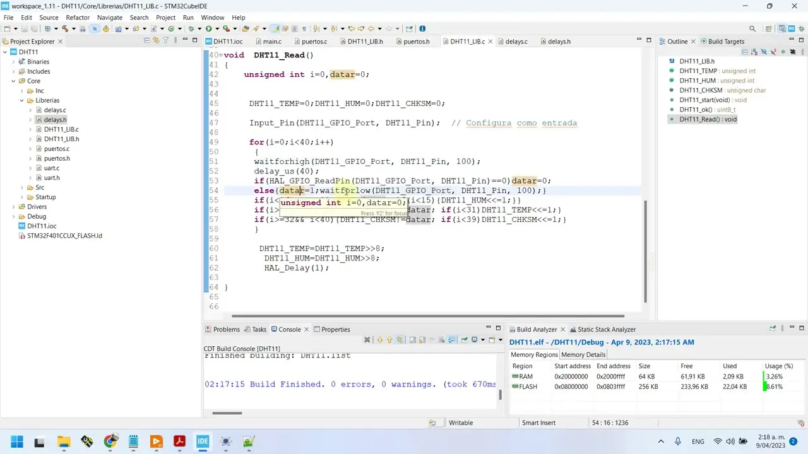
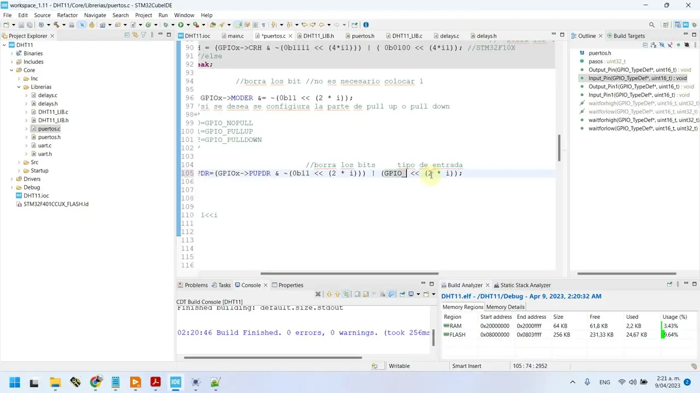

El pin DATA del DHT11 lleva una resistencia pull-up de 4.7 kΩ a VDD. Puede reemplazarse por el pull-up interno, pero no se recomienda cuando el micro trabaja a alta velocidad.

El DHT11 entrega temperatura y humedad por un solo pin, con resolución de 1 grado y solo una lectura por segundo. Se configura un pin con la etiqueta DHT11 y se usan las librerías del curso: puertos (cambia el pin entre entrada y salida y trae waitforhigh/waitforlow con límite de tiempo para no bloquearse si el sensor falla), delays (Delay_us con DWT) y DHT11_LIB. Se leen 40 bits: 16 de humedad, 16 de temperatura y 8 de checksum.

El pin DATA del DHT11 lleva una resistencia pull-up de 4.7 kΩ a VDD. Puede reemplazarse por el pull-up interno, pero no se recomienda cuando el micro trabaja a alta velocidad.

Configura la USART y un pin cualquiera (aquí PA0) como GPIO_Output con la etiqueta DHT11. La librería lo cambia a entrada cuando lo necesita.

Crea la carpeta Librerias, copia DHT11_LIB, puertos, delays y uart, y agrégala a los paths (clic derecho → Add to paths).
La librería de puertos trae dos funciones nuevas: waitforhigh espera a que el pin pase a alto y waitforlow a que pase a bajo, ambas con un tiempo máximo medido con el contador DWT. Así el programa no se queda bloqueado si el sensor está dañado o mal conectado.
uint8_t waitforlow(GPIO_TypeDef *GPIOx, uint16_t GPIO_Pin, uint32_t tiem)
{
DWT->CYCCNT = 0; // resetea el contador
// espera respuesta del sensor por 'tiem' µs
while (HAL_GPIO_ReadPin(GPIOx, GPIO_Pin))
{
if (DWT->CYCCNT > pasos * tiem) return (0); // se acabó el tiempo
}
return (1);
}Si no quieres poner la etiqueta en CubeMX, descomenta en DHT11_LIB.h las líneas #define DHT11_GPIO_Port y DHT11_Pin.


La librería declara las variables como extern, así que hay que crearlas en main.c sin esa palabra.
#include "uart.h"
#include "DHT11_LIB.h" // ya incluye puertos y delays
#include "stdio.h"
#include "string.h"
char texto[100];
unsigned int DHT11_TEMP; // declarar en el main
unsigned int DHT11_HUM;

DHT11_ok() envía la señal de inicio y comprueba que el sensor responde. DHT11_Read() pone el pin como entrada y por cada bit espera el flanco de subida, espera 40 µs y lee: si el pin sigue en alto el bit es 1.
Los bits 0-15 son humedad, 16-31 temperatura y 32-39 checksum. Al final se desplaza 8 veces para quedarse con la parte entera.
void DHT11_Read()
{
unsigned int i = 0, datar = 0;
DHT11_TEMP = 0; DHT11_HUM = 0; DHT11_CHKSM = 0;
Input_Pin(DHT11_GPIO_Port, DHT11_Pin); // configura como entrada
for (i = 0; i < 40; i++)
{
waitforhigh(DHT11_GPIO_Port, DHT11_Pin, 100);
delay_us(40);
if (HAL_GPIO_ReadPin(DHT11_GPIO_Port, DHT11_Pin) == 0) datar = 0;
else { datar = 1; waitforlow(DHT11_GPIO_Port, DHT11_Pin, 100); }
if (i < 16) { DHT11_HUM |= datar; if (i < 15) DHT11_HUM <<= 1; }
if (i >= 16 && i < 32) { DHT11_TEMP |= datar; if (i < 31) DHT11_TEMP <<= 1; }
if (i >= 32 && i < 40) { DHT11_CHKSM |= datar; if (i < 39) DHT11_CHKSM <<= 1; }
}
DHT11_TEMP = DHT11_TEMP >> 8; // parte entera
DHT11_HUM = DHT11_HUM >> 8;
HAL_Delay(1);
}En delays.h se elige qué retardo en µs se usa; aquí el de DWT, que hay que inicializar con delay_us_dwt_init().


delay_us_dwt_init();
while (1)
{
if (DHT11_ok() == 1)
{
DHT11_Read();
sprintf(texto, "Temp=%u Hum=%u\r\n",
(unsigned int)DHT11_TEMP, (unsigned int)DHT11_HUM);
uartx_write_text(&huart1, texto);
}
else uartx_write_text(&huart1, "DHTPbad\r\n"); // sensor no responde
HAL_Delay(1000); // el DHT11 solo da un dato por segundo
}En el video el código venía de otro proyecto con huart2; aquí es huart1. Cómo leer el sensor cada segundo sin frenar el resto del programa se ve en la clase siguiente (uwTick).
Si quitas la resistencia aparece el mensaje de sensor malo. Para una prueba rápida puedes activar el pull-up interno en la función Input_Pin de la librería de puertos (opción GPIO_PULLUP en lugar de GPIO_NOPULL).
Lo recomendable es dejar la resistencia externa para reducir el ruido.
